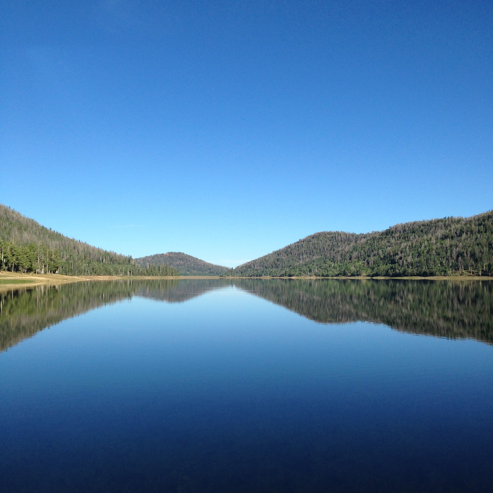
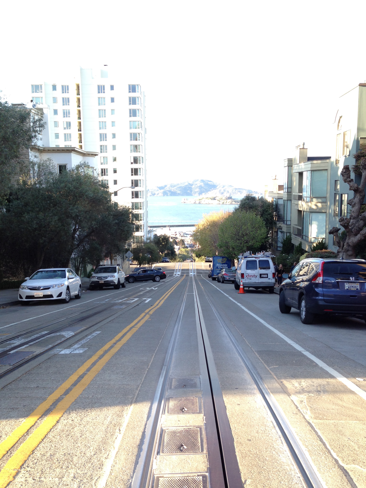
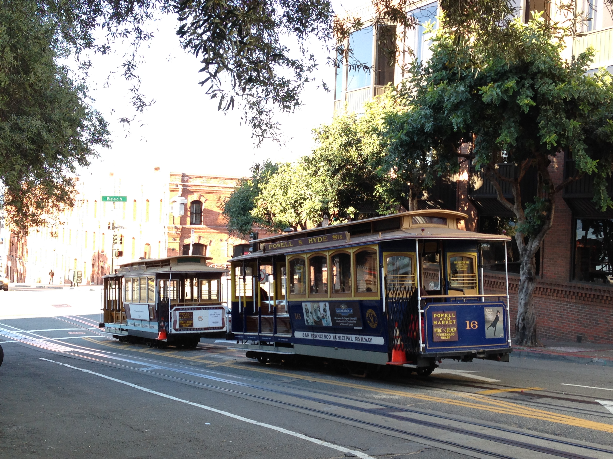

Shot on iPhone 5
This is a collection of photos and videos taken with my iPhone 5.

Overlook to Zion's (Pano View) — Alton, UT / August 2015
Overlook to Zion's — Alton, UT / August 2015
Overlook to Zion's — Alton, UT / August 2015

Navajo Lake — Ceder City, UT / August 2015
Wolf Creek Ranch — Heber, UT / August 2015
Golden Gate Bridge — San Francisco, CA / March 2015
Lombard Street — San Francisco, CA / March 2015

The Hill — San Francisco, CA / March 2015

The Trolley — San Francisco, CA / March 2015
Monterey Bay Aquarium — Monterey, CA / March 2015
Huntington Beach — Huntington Beach, CA / March 2015